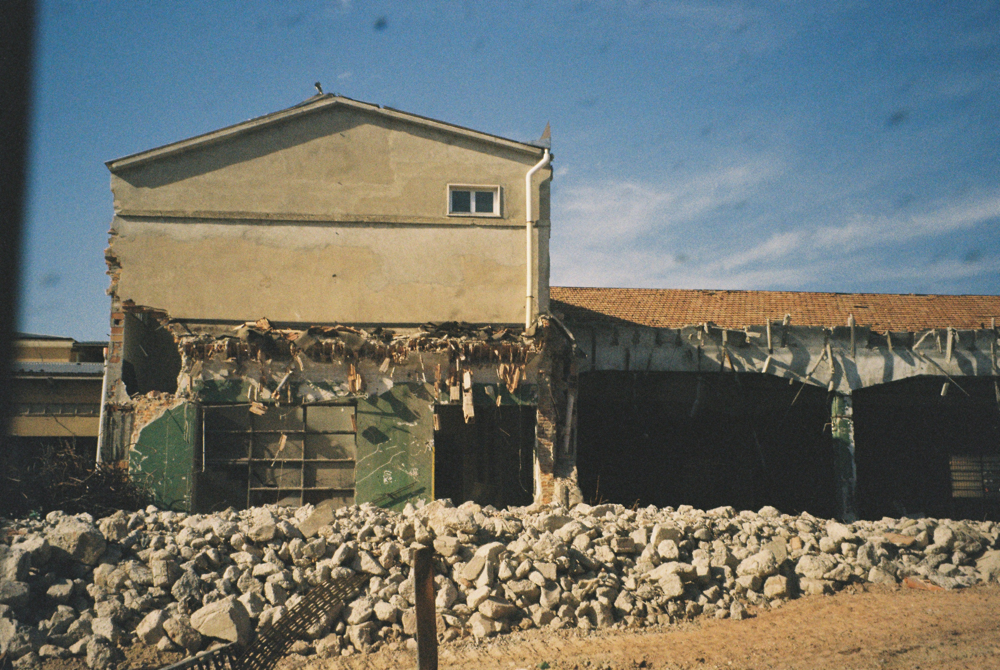
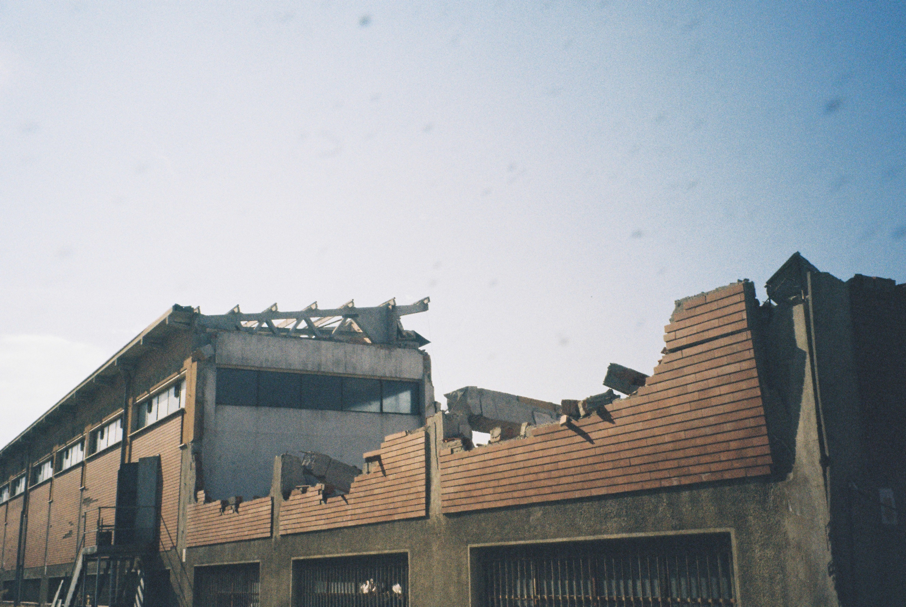
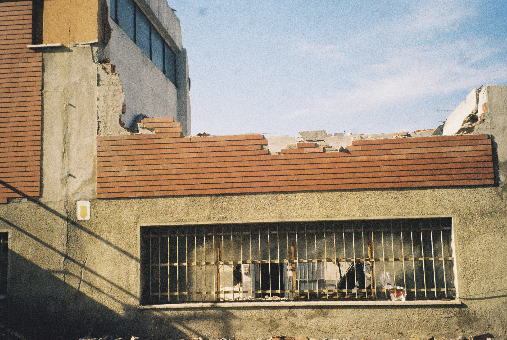

Il Secondo Stipendio



Introduzione
La seguente ricerca si sviluppa attorno allo stabilimento Cagi che per anni ha occupato il centro del mio paese, Motta Visconti, che conta all’incirca 8.000 abitanti. Nell’estate del 2023 sono iniziati i lavori di demolizione dello stabilimento, ed è così che è nata la mia curiosità.
Nel 1955, a Motta Visconti, nacque Cagi Maglierie, azienda che creò occupazione per centinaia di persone fino al 1994. Ufficialmente la sede aprì il 12 gennaio 1957 in un edificio preesistente, dopo alcuni lavori di ristrutturazione. Lo stabilimento era grande 40.000 metri cubi e comprendeva capannoni, magazzini, uffici, area commerciale e come già detto precedentemente era collocato in centro paese. L’impatto economico dell’azienda fu notevole, generando benessere nel paese, che allora era molto più piccolo e che ha vissuto anni floridi sia dal punto di vista occupazionale che commerciale. Anche per le famiglie quest’attività portò novità e benessere, perché garantiva l’entrata di un secondo stipendio in famiglia. Furono infatti assunte principalmente operaie e impiegate donne, ragazze dai 15 anni in su. Ciò significò inevitabilmente un passo verso l’indipendenza della nuova classe operaia, oltre al benessere per le famiglie. La sede a Motta Visconti contava 450 dipendenti di sesso femminile, che risiedevano principalmente in paese e quindi evitavano spese di viaggio. Altre operaie arrivavano dai paesi limitrofi: Casorate, Bereguardo e Trivolzio. La chiusura è avvenuta intorno al 2014. Nei periodi precedenti alcune persone furono trasferite a Cilavegna, dove c’era la fabbrica dei tessuti, mentre a Motta Visconti restarono due laboratori. Si parlava di chiusura già nel’77, infatti da allora smisero di assumere personale. Ad inizio agosto 2012, dopo oltre 50 anni di produzione, la Cagi venne completamente acquisita dalla francese CSP International Fashion Group. Dopo gli scatti effettuati sul luogo dove un tempo sorgeva lo stabilimento, ho voluto approfondire, ascoltando le testimonianze di alcune delle operaie che hanno lavorato nello stabilimento, per conoscere a fondo la loro esperienza lavorativa e di vita che ha cambiato per alcuni decenni il volto del mio paese. Riporto in seguito parti di alcune interviste.
Intervista a Celario Innocentina ()
...Ho lavorato alla Cagi dal 1977 al 2008/2009 circa come operaia, dopo la mia assunzione furono prese solo altre due persone. Inizialmente contavo i capi tagliati che dovevano essere consegnati al laboratorio, dove poi sarebbero stati cuciti, lì il lavoro era abbondante. C’erano diversi reparti: cucitura, stiratura, confezionamento e spedizione; c’era anche chi tagliava le etichette e chi si occupava della piegatura. Producevamo intimo e pigiami, i capi più celebri e che ancora ricordo sono gli slip codice 1808, la canotta cod.1313 e una maglia mercerizzata mezza manica con scollo a V. Dopo ho lavorato per un breve periodo nel reparto piegatura, per poi essere spostata definitivamente alle spedizioni. Il reparto si trovava in cantina, dove lavoravano anche degli uomini, tra cui 3 meccanici e alcuni magazzinieri. Le spedizioni partivano verso centri commerciali come “Bennet” o “Esselunga” ma anche per l’estero...
Intervista a Azimonti Ernesta ()
...ho iniziato a lavorare alla Cagi di Motta nel 1955, e ci ho lavorato fino al 1987, per 32 anni. Preparavo gli indumenti che dovevano essere mandati fuori dal laboratorio, dove venivano tagliati per poi ritornare. La Cagi aveva diversi laboratori: a Serravalle, a Palestro, a Mede e a Cilavegna dove facevano i filati, a Motta Visconti facevamo le confezioni. Avevamo un reparto di maglieria in lana; un reparto dove producevamo slip uomo, magliette canottiere da uomo, un altro per le mutande da donna, magliette per bambini, maglie intime in lana e macchine che facevano il tubolare. Anche magliette per la stilista Roberta Di Camerino. Erano prodotti costosi, il marchio era caro...
Intervista a Celestina Cavalli ()
...il nome Cagi viene dal Calzificio Giudice che aveva sede a Cilavegna, prima di diventare Cagi Maglieria. La sede a Cilavegna era molto grossa, più di quella di Motta. Nella sede a Motta Visconti i primi operai furono assunti nel’42, prima a Milano, per poi essere trasferiti a Motta Visconti. Io cominciai a lavorarci nel ’54, a 15 anni. Mi fu assegnato il cartellino n. 82. Assumevano non sopra i 18 anni, e l’età minima era 15. Il Signor Gerosa dirigeva e mise in piedi un’azienda con solo ragazzine dipendenti; noi ragazze di paese eravamo distanti da quelle di città. 425 assunti più altri laboratori in giro, insieme si contavano 1.000 lavoratori. L’orario di lavoro era dalle 8.00–17.30, ma si arrivava a lavorare anche 9 ore (9 ore al giorno quando facevano le argentine di spugna); inoltre si lavorava al sabato, tutto il giorno. Inizialmente prendevo 46 lire all’ora. Arrivai a guadagnare 500 mila lire al mese. I ritardi erano ovviamente scalati dallo stipendio. Mi ricordo del primo sciopero che facemmo, c’erano anche operaie che venivano da Besate. A seconda della mansione avevamo la divisa di colore diverso. In bianco coloro che lavoravano alle macchine produttive, mentre le’improduttive’ avevano il grembiule nero. Mi ricordo quando provarono ad introdurre l’uso dei computer: la prima volta fu un fallimento, mentre la seconda volta nessuno voleva imparare, mentre io sì. Andai poi a Cilavegna ad insegnare come utilizzare il computer tra l’85 e l’86. Tentarono di aprire un altro reparto sempre a Motta Visconti verso le coste del Ticino ma il Comune non gli diede il permesso; allora aprirono a Rosate...
Intervista a Brusati Giuseppina ()
...ho cominciato a lavorare nella Cagi a Motta Visconti nel’58, a 15 anni, e subito dopo di me chiusero le assunzioni. All’inizio mi misero nel reparto del taglio dove arrivavano i tessuti in falda, c’era un macchinario che stendeva tessuto e le operaie con il cartamodello tagliavano i capi. Poi sempre nel reparto del taglio mi misero a fare cartellini. es. 1200 slip uomo, pacchi del modello e poi andavano alle macchine da cucire. Poi mi spostarono alle spedizioni, che partivano per centro o sud Italia; ma anche per i grandi magazzini come la “Standa” che richiedevano procedure speciali per le spedizioni. Al piano terra c’erano le macchine da cucire e il reparto spedizione, invece sotto si trovava il magazzino dei tessuti. Avevamo anche un reparto di stireria e piegatura. Nel reparto Piana (prende il nome dal direttore del reparto) c’erano macchine e tessuti per le camiciole da donne tubolari. Infine mi misero a fianco del signor Gerosa Giulio, il direttore. Ho lavorato alla Cagi per più di 30 anni, fino ai 56. Sono andata in pensione ma ho continuato a lavorare come consulente per due anni...